Configure an IPSec Tunnel for an AWS Transit Gateway
This guide illustrates how to configure IPsec VPN tunnels between your AWS Transit Gateway and Netskope POPs. You must configure four VPN Tunnels in the Netskope UI for two AWS Site-to-Site VPNs.
This deployment ensures high availability of the site-to-site VPN connection if the AWS Availability Zone fails or a Netskope POP becomes unavailable.
Prerequisites
Before configuring an IPSec tunnel, ensure you have the following:
An AWS account
An AWS IAM user or role with permissions to manage Amazon VPC resources (e.g., AWS Site-to-Site VPN, VPC route tables, and AWS Transit Gateway)
An Amazon VPC with corresponding subnets and route tables
An AWS Transit Gateway with corresponding route table
Access and permissions to manage IPSec VPN tunnels in the Netskope UI
To configure an IPsec VPN tunnel between your AWS Transit Gateway and Netskope POP:
In the Netskope UI, go to Settings > Security Cloud Platform > IPSec and click Add New IPSec Tunnel.
Enter a tunnel name and choose your primary and failover POP. Because you are creating four VPN tunnels in the Netskope UI, Netskope recommends choosing an appropriate naming convention. In this example,
AWSTGW1is the AWS Transit Gateway name that this connection will be connected to,NYC1is the primary Netskope POP, andAcorresponds to the first of two AWS Site-to-Site VPN connections are creating.Copy the IP addresses of the Netskope POPs and leave the window open.
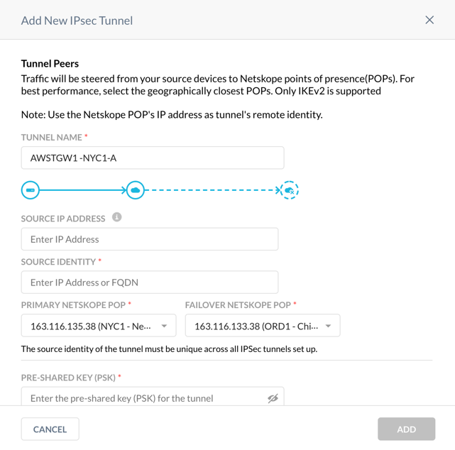Use the Netskope POP IP addresses to configure Customer Gateways on your AWS account.
In the AWS UI, choose the VPC service, and go to VIRTUAL PRIVATE NETWORK (VPN) > Customer Gateways. Click on Create Customer Gateway and enter the primary Netskope POP name and IP address. Click Create Customer Gateway.

Repeat Step 2 to create the Customer Gateway for the failover Netskope POP.
Configure the VPN Connection:
In the AWS VPC UI, go to VIRTUAL PRIVATE NETWORK (VPN) > Site-to-Site VPN Connections. Click Create VPN Connection.
Enter the connection name.
Change Target Gateway Type to Transit Gateway.
Choose your Transit Gateway from the drop-down menu.
Choose the primary Netskope Customer Gateway ID from the drop-down menu.
Change Routing Options to Static.
Leave the Local IPv4 CIDR as the default 0.0.0.0/0.
(Optional) You can limit AWS IP addresses that are allowed to communicate over the tunnel by defining them in the Remote IPv4 Network CIDR. Default prefix 0.0.0.0/0 allows any AWS service and application to send packets over the tunnel based on your routing rules.
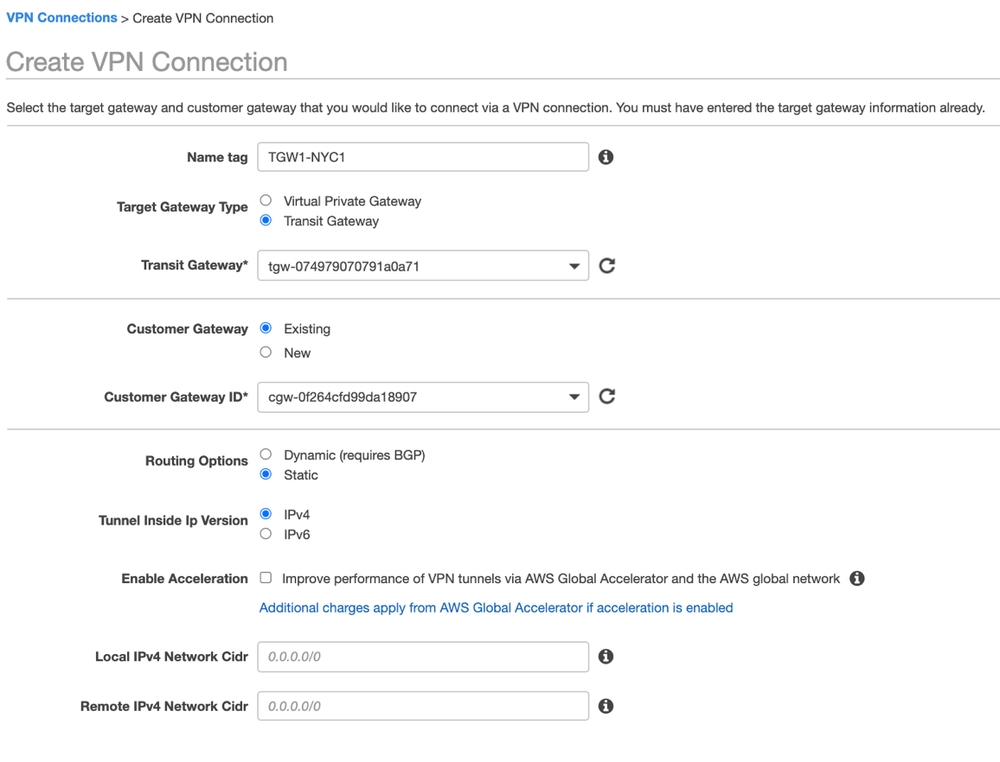In Tunnel Options, click Edit Tunnel 1 Options, and change DPD Timeout Action to Restart and Startup Action to Start.

Click Edit Tunnel 2 Options, and change DPD Timeout Action to Restart and Startup Action to Start.
Click Create VPN Connection and then Close.
In the Site-to-Site VPN connection window, choose the VPN connection you created, and click Download Configuration.
Choose the Generic Vendor from the drop-down menu, and click Download.

Repeat Step 4 to configure the failover Site-to-Site VPN changing the Customer Gateway ID to the one you defined for the failover Netskope POP.
Finish the IPSec Tunnel configuration in the Netskope UI:
Open the AWS Site-to-Site VPN configuration file for the primary AWS Site-to-Site VPN connection you downloaded in Step 4l.
Copy the Pre-Shared Key for IPSec Tunnel #1 in the configuration file.

In the Netskope UI, enter it in Pre-Shared Key (PSK).
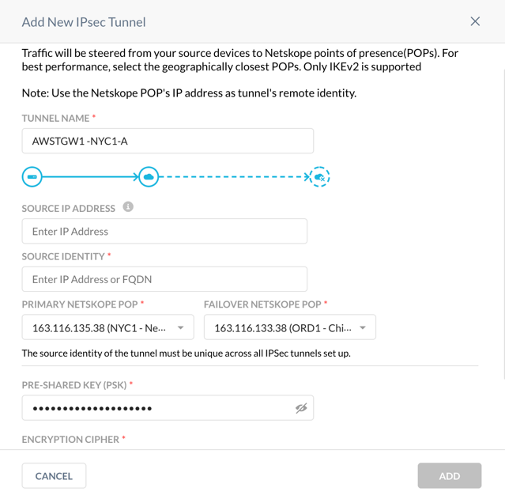In the configuration file, copy the Virtual Private Gateway IP address for IPSec Tunnel #1.

In the Netskope UI, enter it in Source Identity.
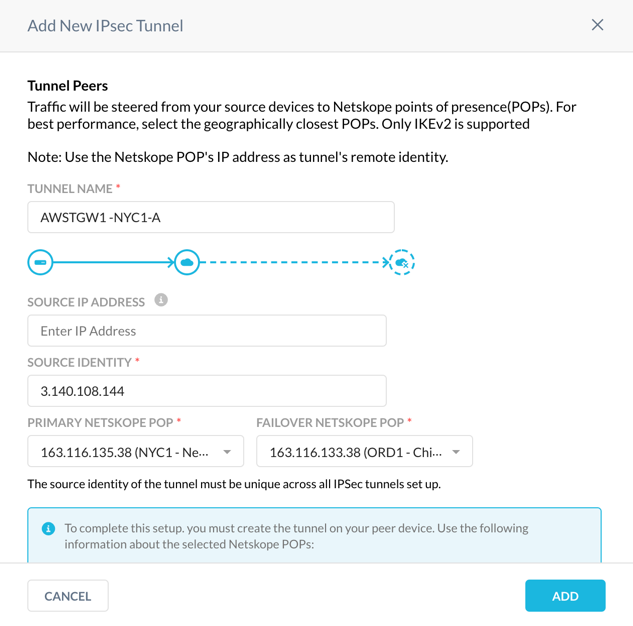Click Add.
Configure the second VPN tunnel in the Netskope management console.
Repeat Step 1 and choose the same primary and failover Netskope POPs.
Repeat the Step 6 and use the Pre-Shared Key for IPSec Tunnel #2 and the Virtual Private Gateway IP address from the first AWS Site-to-Site VPN configuration file.
Configure the third and fourth VPN tunnels in the Netskope UI.
Repeat Step 1 and reverse the primary and failover Netskope POPs.
Repeat Step 6 using the Pre-Shared Keys for IPSec Tunnel #1 and #2, Virtual Private Gateway IP addresses from the second AWS Site-to-Site VPN configuration file.
At this point, you have configured two AWS Site-to-Site VPN connections, each associated with two tunnels and four corresponding VPN tunnels in the Netskope UI.
Check the status of the VPN tunnels in the Netskope UI and assure all four tunnels are up.
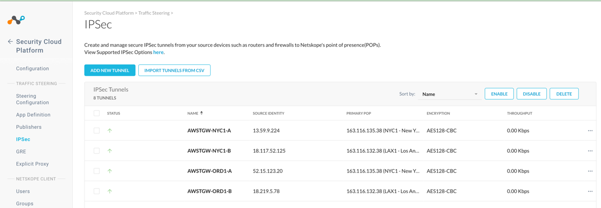In the AWS VPC UI go to VIRTUAL PRIVATE NETWORK (VPN) > Site-to-Site VPN Connections. For each configured connection, select the connection and click the Tunnel Details tab to verify that the status of all four tunnels are up.
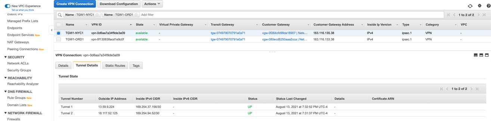
In an AWS Site-to-Site VPN connection for a single VPC (AWS Virtual Private Gateway), routing is controlled by the static routes in the AWS Site-to-Site VPN connection and the VPC route table associated with the VPC egress subnet. In an AWS Site-to-Site VPN connection with an AWS Transit Gateway, egress routing for a specific VPC is controlled by the transit gateway route table associated with the transit gateway VPC attachment and the VPC route table for the egress subnet.
If your AWS Transit Gateway has the default route table, default route table association, and propagation enabled, the transit gateway attachments, which are created automatically when you created the AWS Site-to-Site VPN connections for the AWS Transit Gateway, are associated with the default route table. Otherwise, the transit gateway VPN attachments won't have a route table associated with them. Regardless, Netskope recommends associating a separate transit gateway route table with the Netskope transit gateway VPN attachments (see the high availability architecture diagram for an AWS Transit Gateway).
(Optional) Assign the names for new TGW VPN attachments.
When you created two AWS Site-to-Site VPN connections for your AWS Transit Gateway, AWS automatically created two transit gateway VPN attachments. Netskope recommends assigning the names for these attachments so you can easily identify them.
In the AWS VPC UI go to TRANSIT GATEWAYS > Transit Gateways Attachments. Select the first VPN attachment with the empty Name column. In the Details tab, right-click the Resource ID to open the link in a new window.
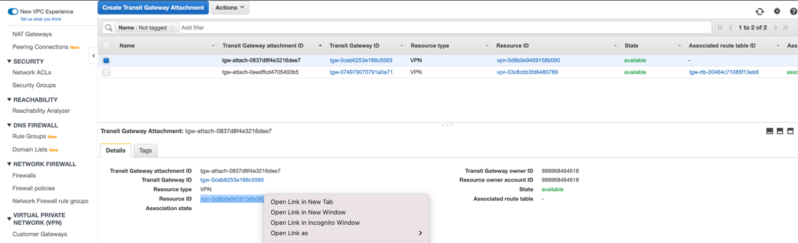On the VPN Connection page, copy the name of the associated VPN connection:
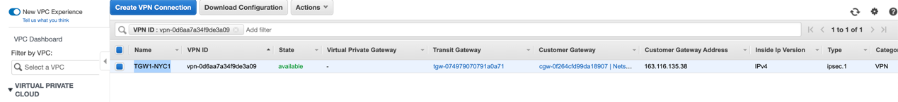In the Transit Gateway Attachment page, edit the Name column and paste the VPN connection name you copied. This allows you to easily identify the associated Netskope POP and AWS Transit Gateway:
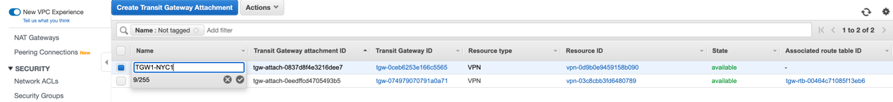Create a transit gateway route table for transit gateway VPN attachments.
Go to TRANSIT GATEWAYS > Transit Gateways Route Tables. Click Create Transit Gateways Route Table.
Enter a route table name, choose your AWS Transit Gateway from the drop-down menu, and click Create Transit Gateways Route Table.
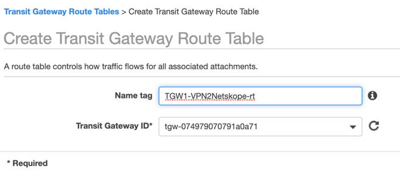Associate the transit gateway route table with your Netskope transit gateway VPN attachments.
On the Transit Gateways Route Tables page, select the route table you created. Click the Associations tab and then Create association. Choose the first transit gateway VPN attachment from the drop-down menu, and click Create association.
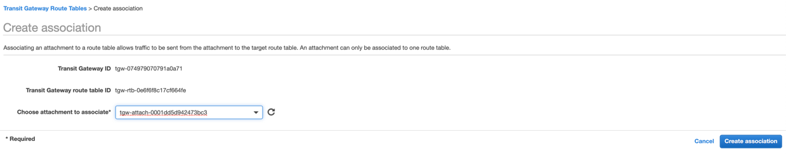Click the Create association tab again and repeat the steps to create an association for the second transit gateway VPN attachment.
Configure a route propagation from your VPC to your transit gateway route table.
On the Transit Gateways Route Tables page, select the route table that you configured an association for. Click the Propagations tab and then Create propagation. Choose the transit gateway VPN attachment for your VPC, and click Create propagation.
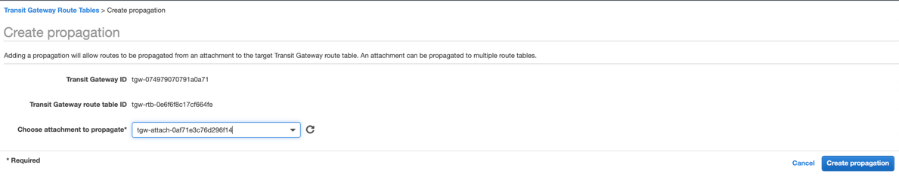On the Transit Gateways Route Tables page, select the route table that you configured a propagation for. Click the Routes tab and ensure your VPN routes are propagated.
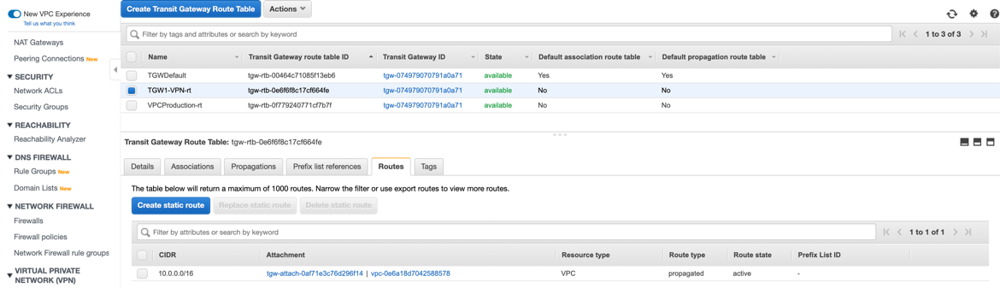This guides assumes you have TGW route table associated with your VPC. It also assumes your egress VPC subnet route table has a static route for the egress traffic pointing to your AWS Transit Gateway.
If you’re using a new VPC for testing, or you want to isolate a specific VPC for egress traffic testing with Netskope, create a transit gateway route table and associate it with the corresponding transit gateway VPC attachment. To learn more, see the Amazon VPC documentation.
Create a static route for the egress traffic in the transit gateway route table.
In AWS VPC UI, go to TRANSIT GATEWAYS > Transit Gateways Route Tables, and select the route table associated with your VPC. Click the Routes tab and click Create static route.
Enter the egress static route (e.g., 0.0.0.0/0), and choose the transit gateway VPN attachment for the primary Netskope POP. Click Create static route.
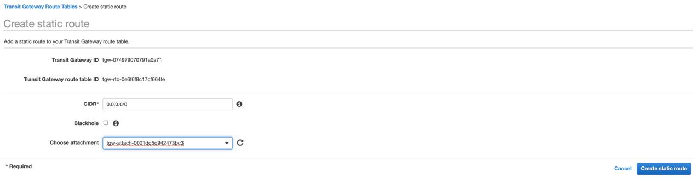Repeat this step for each VPC you’d like to integrate with the Netskope cloud. Netskope recommends automating this step with your CloudOps orchestration tools for VPC provisioning.
Note
Only a single static route to the Netskope POP must be present in the transit gateway route table. If the AWS Availability Zone fails, the above configuration will be available. However, if the Netskope primary POP is unavailable, you must manually intervene.
To automate traffic failover from Netskope primary POP to the failover one, you must deploy the Netskope AWS Transit Gateway Management solution. This Netskope solution deploys AWS Lambda that's been triggered by the CloudWatch event rule for IPSec tunnel status changes. When called by the CloudWatch event rule, AWS Lambda checks if both tunnels to the Netskope POP are down. If so, it scans all the transit gateway route tables for the static route pointing to the transit gateway VPN attachments and corresponding AWS Site-to-Site VPN connections and replaces them with the alternative static route to the failover Netskope POP.
You must deploy the Netskope solution in the US-West-2 region and enable the AWS Transit Gateway Network Manager. The AWS Transit Gateway Network Manager is the global AWS service that monitors the status of IPSec Site-to-Site VPN connections and uses Amazon CloudWatch in the US-West-2 region for alerting and logging. The Netskope solution uses AWS Transit Gateway events in the US-West-2 region to monitor your transit gateway in any region on the same account. However, cross-account monitoring is not supported. You also must deploy one Netskope AWS Transit Gateway Management instance per transit gateway. You can customize AWS Lambda to work with multiple transit gateways or treat a group of transit gateway attachments differently.
The Netskope solution assumes all transit gateway VPC attachments have the static route pointing to the same VPN attachments. Therefore, all VPCs connected to your AWS Transit Gateway utilize the same IPSec tunnel between the transit gateway and Netskope POP. Each tunnel is limited to 250 Mbps of bandwidth. To scale the Netskope solution, you can split your VPCs to a number of groups and route traffic for each group for its own redundant IPsec Site-to-Site VPN connections. You can customize AWS Lambda to support this option. You also can enable or disable the fallback functionality. If enabled, AWS Lambda will revert static routes to the primary Netskope POP when both of the IPSec tunnels are up.
In addition to checking and updating routes when the IPSec tunnel status changes, AWS Lambda triggers every 10 minutes and checks if there are any routes left pointing to the inactive IPSec tunnel. This prevents a an execution time out where the IPSec connections are intensively bouncing and cause a race condition between the AWS Lambda executions. To prevent inconsistent results, only one AWS Lambda execution can run at a time. To control concurrency, you can use Amazon DynamoDB, which is created as part of the Netskope solution deployment.
The AWS CloudFormation stack creates the IAM role for AWS Lambda. CloudFormation implements the role based on the least privilege access control model. To limit access only to transit gateway attachments and route tables that belong to the transit gateway, CloudFormation uses the IAM policy condition that checks the tags associated with the transit gateway attachments. You must tag each of your transit gateway attachments with the tag "Key"="TGWName", "Value"="<Transit Gateway Name>". Replace <Transit Gateway Name> with the name of yours. For example, "Key"="TGWName", "Value"="NSTGW-us-east-1".
Clone the Netskope AWS Transit Gateway Management repository.
Note
If don't plan to modify AWS Lambda, you can deploy this solution using
TGW_IPsec_management.yaml, which is a CloudFormation template that deploys AWS Lambda from the Netskope AWS S3 bucket.Change the region to US West (Oregon) (i.e., US-West-2).
In the AWS CloudFormation UI, click Create stack and then With new resources (standard).
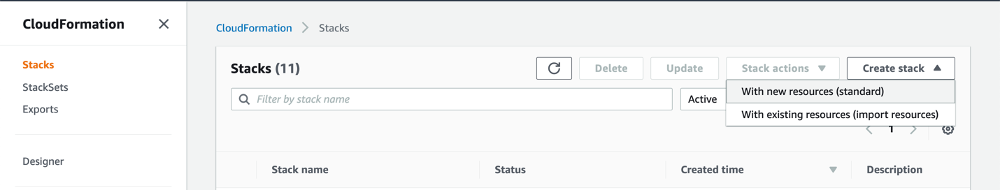Choose Upload a template file, and click Choose file.
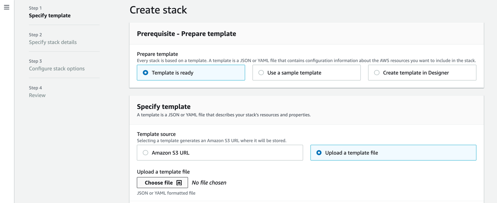Select the TGW_IPsec_management.yaml file, click Open, and click Next.
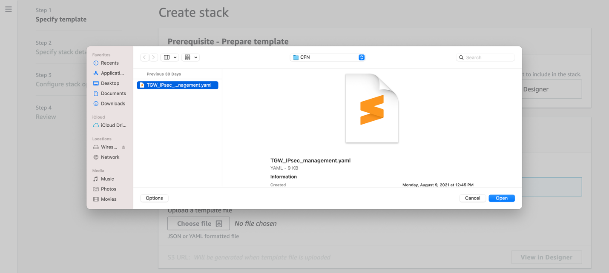In Specify stack details:
Stack name: Enter a name for the stack.
Fallback: Choose yes or no if you want route fallback support for TGWAttachmentID1 when both of its IPSec tunnels became active after failure.
TGWAttachmentID1: Enter the ID of the transit gateway attachment for the primary VPN (e.g., tgw-attach-01234567890123456).
TGWAttachmentID2: Enter the ID of the transit gateway attachment for the failover VPN (e.g., tgw-attach-01234567890123456).
TGWID: Enter the ID of the AWS Transit Gateway (e.g., tgw-01234567890123456).
TGWName: Enter the AWS Transit Gateway name used for access control. All your transit gateway attachments must have an attribute
{"Key"="TGWName", "Value"="<Transit Gateway Name>"}. For example,{"Key"="TGWName", "NSTGW-us-east-1"}.TGWRegion: Choose the AWS region where you deployed your AWS Transit Gateway.
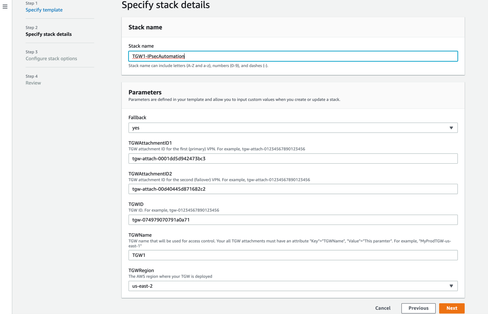Click Next.
(Optional) Enter any tags for your stack, and click Next.
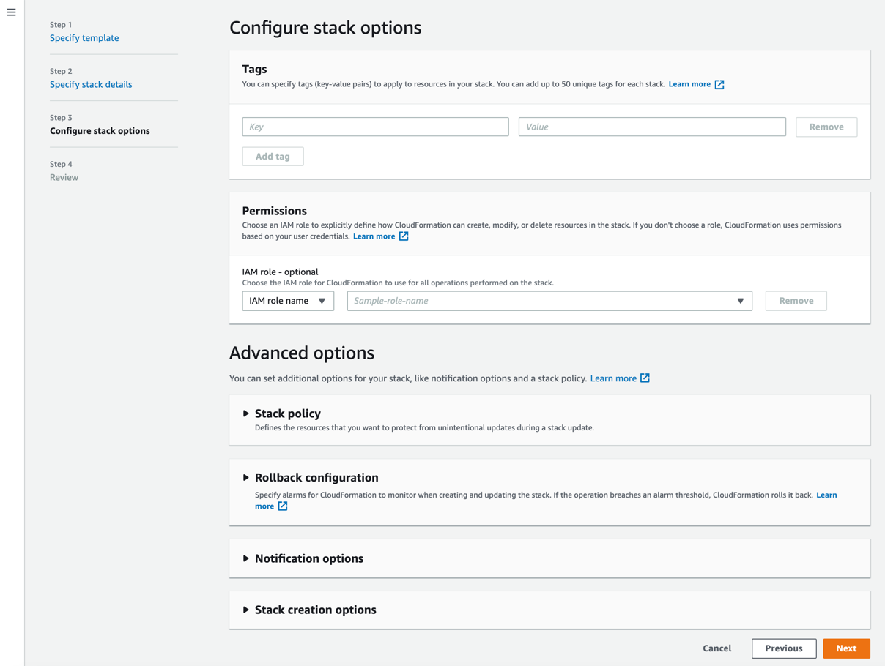Select I acknowledge that AWS CloudFormation might create IAM resources, and click Create stack.
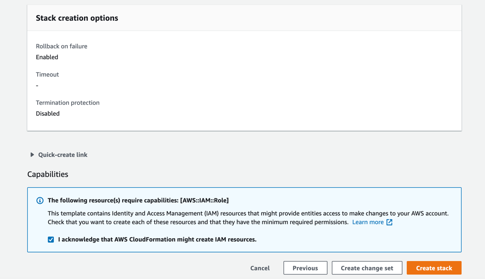
When your configured CloudFormation stack status is CREATE_COMPLETE, you can click the Resources tab and see the resources the stack created.
To monitor your AWS Lambda execution logs, in the AWS CloudWatch UI, go to Logs > Log groups and select the log group for your AWS Lambda.